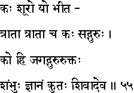
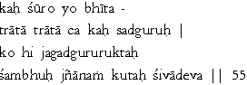

|

|
Verse 55 - Meaning:
Q:Who is (kah) a hero (suuro) ?
A:He (yo) who gives protection (traata) to the frightened ones. (bhiita)
Q:Who (kah) is a true protector (traataa-ca) ?
A:A spiritual teacher (sad-guruh) or the perfect teacher, who can be likened to God.
Q:Who is (ko hi) the spiritual teacher (gurur-uktah) for the whole world (jagat) ?
A:It is "Sambhu", the Supreme Being.
Q:From whom (kutah) does one acquire knowledge (jnaanam) ?
A:From Siva indeed. (sivaad-eva)
|